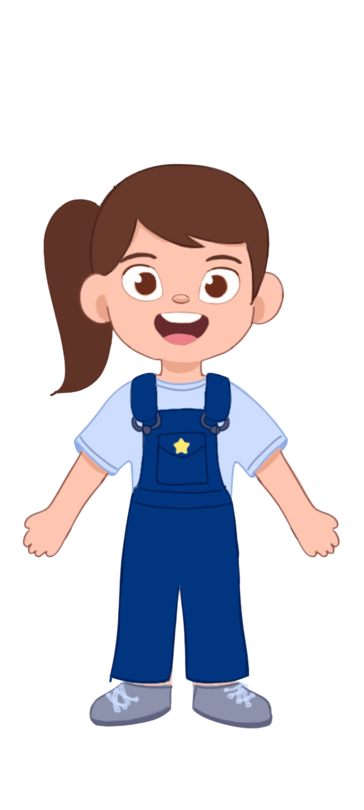
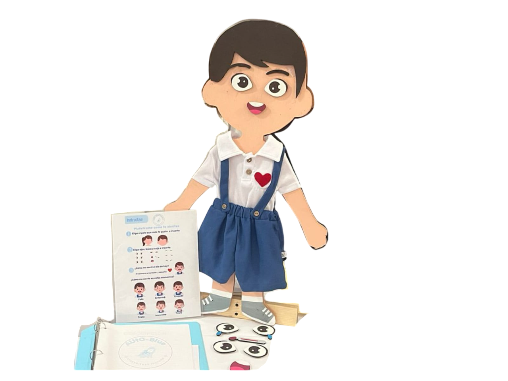

AutoBlue Sensory
Pinta el mundo a través del amor a la inclusión
Productos
AUTO-BLUE SENSORY Busca convertir a niños con autismo en jóvenes/adultos independientes mediante la estimulación de forma divertida y desarrollando capacidades como la inteligencia emocional y habilidades cognitivas.
El autismo, o trastorno del espectro autista (TEA), afecta aproximadamente a 1 de cada 100 niños a nivel mundial, según datos de la Organización Mundial de la Salud (OMS).
Como problemática detectamos que los niños con el trastorno del espectro autista presentan dificultades significativas en identificar y expresar sus emociones. Inspirado en la creación de un juguete para niños con trastorno del espectro autista, para que de esta manera amplíen sus capacidades de comunicación y aprendan sobre la identificación de partes de las emociones y de esta manera expresarlas. Incrementando sus capacidades de expresión, y desarrollando sus habilidades socioemocionales.
Nuestro juguete es recomendado para niños de 3 a 6 niños en adelante. El juguete es elaborado con un material llamado MDF, es cuerpo completo del niño y consta de partes adaptables como: ojo, cejas, boca y pelo, consta de pelo de niña y niño, todas estas partes son pegadas con un material llamado velcro. Tiene una medida de aproximadamente 75cm y su estructura es fuerte y rígida para asegurar su estabilidad. Por último cuenta con un módulo de voz que le preguntará al niño su estado de ánimo para que al ensamblar las piezas pueda responder como se siente.
Nosotros

Misión
Ayudar al desarrollo y crecimiento de los niños, mejorando sus habilidades motoras, intelectuales y enocionales al permitirles reconocer sus emociones. Crear juguetes innovadores y seguros que promuevan el desarrollo sensorial, cognitivo, y emocional de niños con autismo. Nos dedicamos a crear experiencias de juego inclusivas que fomenten la creatividad, la comunicación y las habilidades sociales, mejorando la calidad de vida de los niños y sus familias

Visión
Ser líderes en la innovación del juguete contribuyendo a un mundo donde todos los niños, independientemente de sus habilidades, puedan jugar, aprender y prosperar juntos. Busca ser una marca reconocida en el estado y la república, para ayudar a niños con autismo en su desarrollo y crecimiento a la hora de demostrar sus emociones, también por su dedicación, accesibilidad, calidad y el impacto positivo que causará en la vida de los niños y familias.
Contacto
Correo electronico: autobluesensory@gmail.com